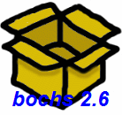

Welcome to the Bochs IA-32 Emulator Project
Bochs is a highly portable open source IA-32 (x86) PC emulator
written in C++, that runs on most popular platforms. It includes emulation of the
Intel x86 CPU, common I/O devices, and a custom BIOS. Bochs can be compiled to emulate
many different x86 CPUs, from early 386 to the most recent x86-64 Intel and AMD processors
which may even not reached the market yet.
Bochs is capable of running most Operating Systems inside the emulation including Linux, DOS or
Microsoft Windows. Bochs was originally written by Kevin Lawton and is currently maintained by
this project.
Bochs can be compiled and used in a variety of modes, some which are
still in development. The 'typical' use of bochs is to provide complete x86 PC emulation,
including the x86 processor, hardware devices, and memory. This allows you to run OS's and
software within the emulator on your workstation, much like you have a machine inside of a
machine. For instance, let's say your workstation is a Unix/X11 workstation, but you want to run
Win'95 applications. Bochs will allow you to run Win 95 and associated software on your Unix/X11
workstation, displaying a window on your workstation, simulating a monitor on a PC.

Bochs 2.6.6 released on June 15, 2014 !
New Bochs 2.6.6 release is now available. You can download it from the
SourceForge project page.
See the
CHANGES file for details on what has changed since release 2.6.5
Bochs IRC Chat Transcripts
The Bochs community held an IRC open discussion chat on Sunday, February 1, 2004.
We talked about current and future developments (Transcript). Here are some transcripts of earlier conversations:
October 13, 2002,
April 7, 2002,
June 19, 2001,
May 30, 2001.
Bochs at ISCA-35
Bochs was presented at ISCA-35 in Beijing, China at
"The 1st Workshop on Architectural and Microarchitectural Support for Binary Translation" by a paper
"Virtualization without direct execution - designing a portable VM". Download paper and presentation slides.
Help Wanted We currently need help with the following tasks:
Bug Reports:
Mouse, interrupt controller,
timer, IDE controller, network card, keyboard, VGA... Most of our bug
reports and feature requests are due to incomplete C++ models of the
various PC devices. To improve this, we need PC Hardware Gurus who know
where to find the specs for this stuff and improve the hardware models for
Bochs. Working on models is a fun way to learn how things work, and unlike
designing a real hard disk, you can test out your changes on a real operating
system immediately!
Disk Images: Our collection of disk images is getting out of date. It would be great to have small or large images of a variety of free operating systems.
Documentation: Adding installation help and other useful information into the docs.